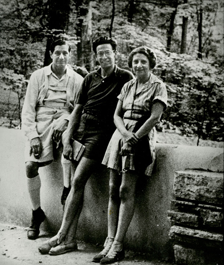
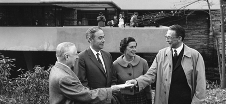
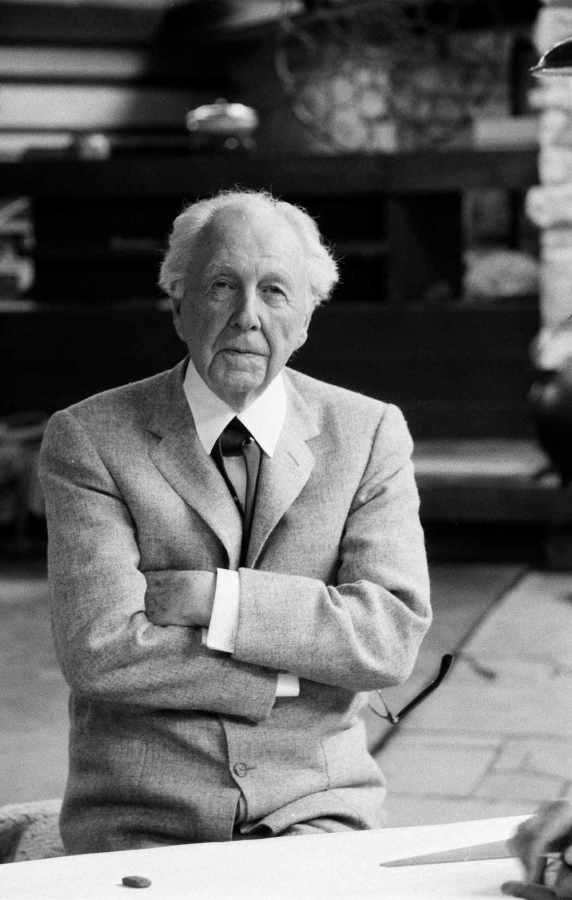
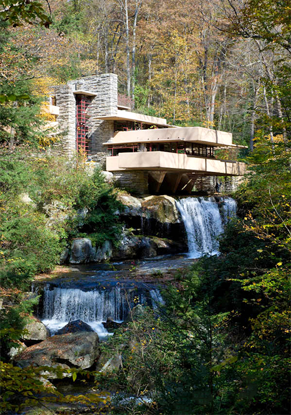
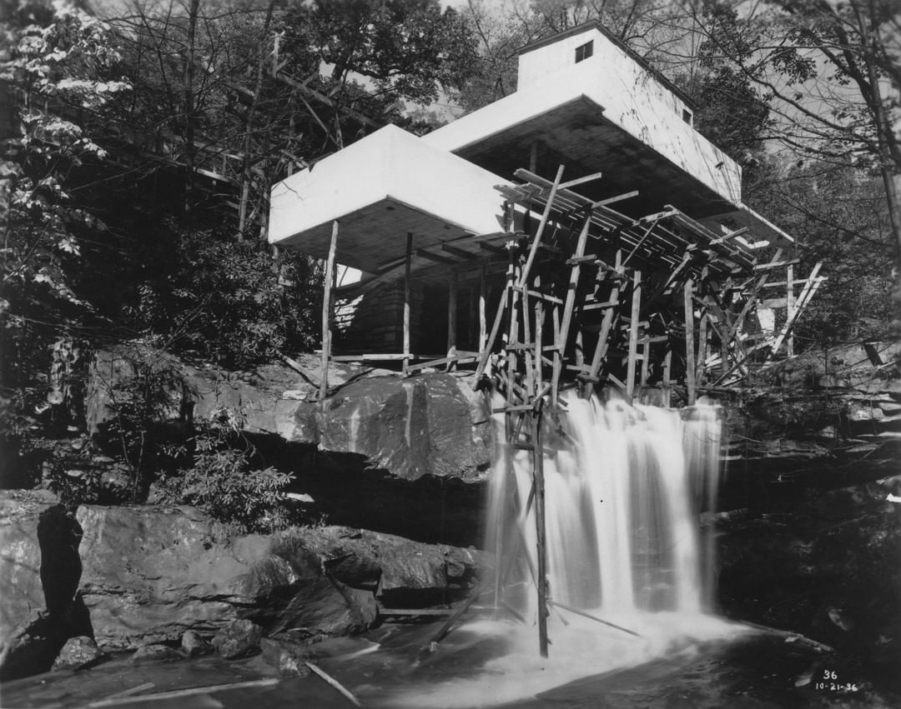
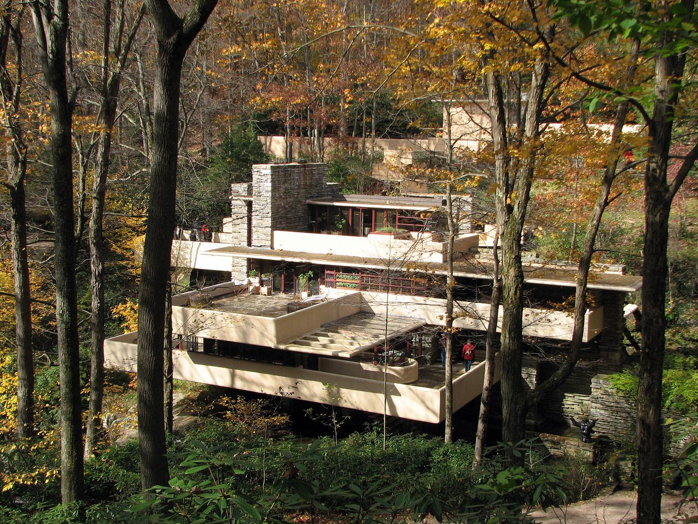
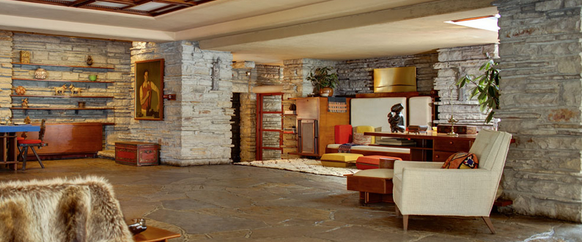
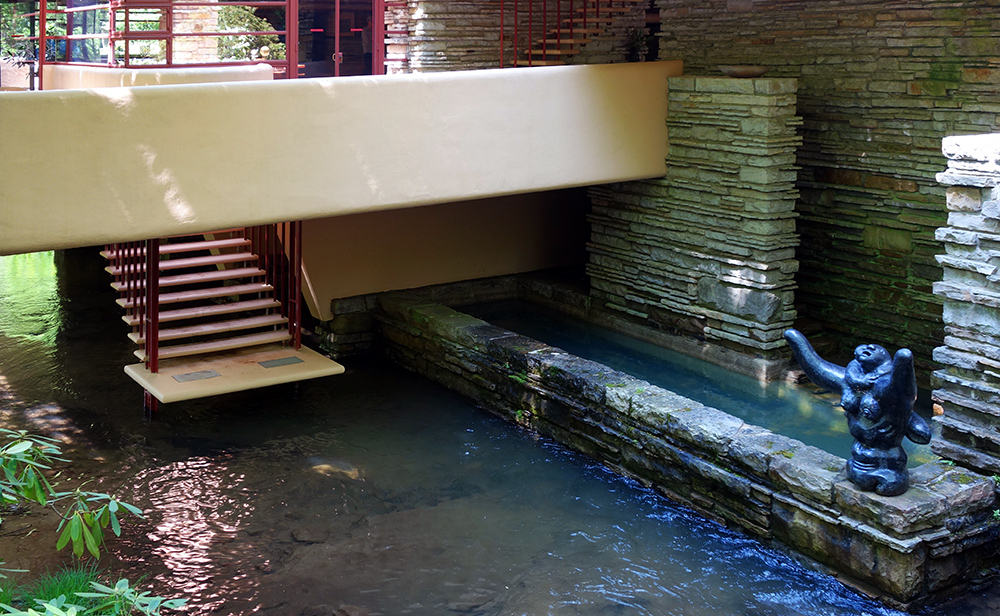

+++
title = "Şelale Evi (Fallingwater House)"
url = "sayi-15/selale-evi-fallingwater-house/"
date = "2021-12-11"
description=""
aciklama="Fallingwater, Amerika Birleşik Devletleri’nin Pittsburgh şehri yakınlarında doğa ile iç içe bir bölge olan Mill Run’da yer alıyor. Bear Run Irmağı üzerindeki bir şelalenin tam üstüne inşa edilmiş olan bu ev organik mimarinin ilk örneklerinden sayılıyor. Fallingwater ismi Frank Lloyd Wright tarafından verilmiş fakat “Kaufmann Evi” olarak, sahiplerinin ismiyle de anılıyor."
thumb="/img/"
sayi=[
"15"
]
sayfa="04"
yazar=["eylul ecem sogutlu"]
type="sayfa"
tags= [
"dergi", "sanat akimi"
]
+++

<div class="container">
  <div
    style="
      background-image: url('/img/Fallingwater-dismekan.jpg');
      height: 100vh;
      background-position: top;
    "
    class="bg-mrkt"
  >
    <p
      class="pl-md-4 pr-md-5 p-1 mt-3 mgen m-auto text-white"
      style="background-color: rgba(0, 0, 0, 0.7)"
    >
      <strong>
        Fallingwater, Amerika Birleşik Devletleri’nin Pittsburgh şehri
        yakınlarında doğa ile iç içe bir bölge olan Mill Run’da yer alıyor. Bear
        Run Irmağı üzerindeki bir şelalenin tam üstüne inşa edilmiş olan bu ev
        organik mimarinin ilk örneklerinden sayılıyor. Fallingwater ismi Frank
        Lloyd Wright tarafından verilmiş fakat “Kaufmann Evi” olarak,
        sahiplerinin ismiyle de anılıyor.
      </strong>
    </p>
  </div>

  <div class="row">
    <div class="col-md-6">
      {{}}
      <br />
      <small>Kaufmann Ailesi</small>
    </div>
    <div class="col-md-6">
      <p>
        Fallingwater’ın yapılış öyküsünün merkezinde Kaufmann ailesi yer alıyor.
        Liliane, Edgar ve oğulları Edgar Jr.&#39;dan oluşan ve 3 kişilik bir
        aile olan Kaufmann’lar, 1930’lu yıllarda bir alışveriş merkezi sahibi
        zengin bir aileydi.
      </p>
      <p>
        Kaufmann ailesi Pittsburgh’ta yaşıyordu ve çelik endüstrisinin geliştiği
        bu bölgeye endüstrinin getirdiği hava kirliliğinden dolayı “Dumanlı
        Kent” deniliyordu. Bu nedenle aile bölgedeki diğer sakinler gibi fırsat
        buldukça Pittsburgh’un güneydoğusunda yer alan Appalachian Dağları’ndaki
        Bear Run Irmağı kıyısında tatil yapıyorlardı.
      </p>
      <p>
        Edgar Kaufmann, çalışanlarının da tatil yapabilmelerini sağlamak için
        ırmak kenarında satın aldığı arazide yaz kampları düzenlemek istiyordu.
        Kamp, çalışanların kalabileceği küçük kulübelerden oluşuyordu. Ancak o
        yıllarda Amerikan ekonomisinde yaşanan büyük buhran sebebiyle
        çalışanların kampa katılacak zamanları ve paraları yoktu. Bu durumda,
        Kauffman Ailesi, araziyi kendileri için kullanmaya karar verdi.
      </p>
    </div>
  </div>

  <div class="row">
    <div class="col-md-6">
      <p>
        Kamp evleri küçük bir kulübeden oluştuğu için kendilerine yetersiz
        geliyordu. Ayrıca, çevreye tatile gelen insanların kullandığı yola da
        çok yakındı; gürültü ve trafik gittikçe artıyordu. Aile, böylece
        arsalarının daha sessiz bir bölgesinde modern bir tatil evi inşa
        ettirmek için uygun bir mimar arayışına girdiler.
      </p>
      <p>
        O yıllarda Edgar Jr. modern sanat ve tasarımla çok ilgileniyordu; Frank
        Lloyd Wright’ın açmış olduğu mimarlık okuluna gitmeye başlamıştı.
        Oğullarının bu ilgisi anne-baba Kaufmann’ın da mimara ve eserlerine
        ilgisini artırmıştı. Ayrıca Frank Lloyd da kendileri gibi bir doğa
        severdi. 1935 yılında fazla düşünmeden tarihe geçecek evlerinin
        tasarımını Frank Lloyd’un yapmasına karar verdiler.
      </p>
      <p>
        <strong
          >Wright’ın Şelale Evi’nin planlarını çizmesinin sadece iki saatini
          aldığı söylenmektedir.</strong
        >
      </p>
      {{}}
    </div>
    <div class="col-md-6">
      {{}}
      <blockquote><p>Frank Lloyd Wright</p></blockquote>
    </div>
  </div>

  <div class="p-md-5 bg-grey">
    📎 "Fallingwater'da Wright, doğayla birlikte yaşama arzumuzun mükemmel özünü
    yakaladı: ormanlık bir yerde yaşamak ve doğal dünyada evde olmak. " Edgar
    Kaufmann, Jr.
  </div>

  <h2 id="tatil-evi-düşüncesinden-örnek-mimariye">
    <strong>Tatil Evi Düşüncesinden Örnek Mimariye</strong>
  </h2>
  <div class="row">
    <div class="col-md-6">
      {{}}
    </div>
    <div class="col-md-6">
      <p>
        Kaufmann ailesinin en önemli isteği, arsalarında bulunan küçük şelaleyi
        yaptıracakları evlerinden rahatlıkla görebilmekti. Frank Lloyd Wright,
        araziyi gördüğü anda evi şelaleyi gören bir yere değil, şelalenin tam
        üzerine yapmaya karar verdi. Şelale evin dolayısıyla da ailenin bir
        parçası olacaktı. Fikri önce şaşkınlıkla karşılayan çift, Frank Lloyd’un
        mimari yaratıcılığı ve mesleki bilgisi karşısında ikna oldular.
      </p>
      {{}}
      <p>
        İnşaatın en büyük problemi, yasal olarak izin verilen alanın Frank
        Lloyd’un yapmak istediği ev için bir temel oluşturacak kadar geniş
        olmamasıydı. Bu durumu çözmek için konsollu bir yapı kullandı; evi
        sütunlar üzerine kurmaya karar verdi. Böylece evin oturacağı alan izin
        verileni geçmeyecek ama sütunlar üzerine inşa edilen ev istenilen
        büyüklükte olabilecekti. O tarihlerde bu bir yenilik niteliğindeydi.
      </p>
    </div>
  </div>

  <p>
    Konsol uygulaması Frank Lloyd ile Edgar Kaufmann arasında tatsızlık
    yaşanmasına sebep bile olmuştu. Kaufmann, mimarın konsol tasarımının
    danışman bir firmanın mühendisleri tarafından gözden geçirilmesini istedi.
    Duruma çok sinirlenen Frank Lloyd suç duyurusunda bulunarak Kaufmann’a
    vermiş olduğu çizimlerini geri istedi ve projeden çekileceğini söyledi.
    Tatsızlık Edgar Kaufmann’ın durumu kabullenmesiyle son buldu ve Frank Lloyd
    1936 yılında Fallingwater’ın yapımına başladı. Ev, 1939 yılında tamamen
    bitti.
  </p>
  <p>
    {{}}
  </p>
  <div class="p-md-5 bg-grey">
    📎 Fallingwater, ana ev, konuk evi ve bir garajdan oluşmaktadır. Ana ev,
    5.330 metrekaredir. Bu alanın 2.885 metrekaresi teras için kullanılmıştır.
  </div>

  <div class="row">
    <div class="col-md-6">
      {{}}
    </div>
    <div class="col-md-6">
      <p>
        Güçlü yatay ve dikey çizgilerle ayırt edici özelliklere sahip olan
        Fallingwater, organik mimari ile kübist mimarinin bir karışımı olarak
        tasarlanmış modern bir yapıdır.
      </p>
      <p>
        Arsadan çıkan doğal taşların duvar, şömineler hatta bazı alanlarda
        zeminlerde de kullanılması sanatçının ve yapının organik mimari tarzının
        en önemli göstergeleridir.
      </p>
    </div>
  </div>

  <div class="row">
    <div class="col-md-6">
      {{}}
    </div>
    <div class="col-md-6">
      <p>
        Şelalenin sesi evin her yerinden duyuluyor olsa da kendisini görmek için
        dışarıya çıkmak gerekiyordu. Bunun için oturma odasından su seviyesine
        kadar inen bir merdiven inşa edildi. Aralarında Einstein’ın da
        bulunduğu, Kaufmann ailesinin pek çok ünlü misafiri bu merdivenlerde
        oturarak şelaleyi seyretti. Frank Lloyd Wright’ın birleşik ve organik
        bir kompozisyon yaratma arzusu Fallingwater’daki renk paletini sınırlı
        hale getirmiştir. Yapıda, sadece iki renk kullanılmıştır: beton için
        hafif bir kehribar ve çelik için kırmızı.
      </p>
    </div>
  </div>

  <p>
    Edgar Jr. 1963 yılında Fallingwater’ı ailesinin anısına Batı Pensilvanya
    Doğa Koruma Kurumu’na devretti. Tatil evi, bir dizi restorasyon geçirdi ve
    güçlendirildi. 1964 yılından bu yana, mobilyalarıyla, sanat eserleriyle ve
    eşsiz mimarisi ile müze olarak dünyanın her tarafından gelen ziyaretçileri
    ağırlıyor.
  </p>

  <div class="row">
    <div class="col-md-6">
      <div class="embed-responsive embed-responsive-16by9">
        <iframe
          class="embed-responsive-item"
          src="https://www.youtube.com/embed/bC9ipWcYnQc"
        ></iframe>
      </div>
    </div>
    <div class="col-md-6">
      <div class="embed-responsive embed-responsive-16by9">
        <iframe
          class="embed-responsive-item"
          src="https://www.youtube.com/embed/VITc_aO-lTM"
        ></iframe>
      </div>
    </div>
  </div>

  <div class="bg-kirmizi-saydam p-md-5">
    📎 "Böyle bir yere sahip olunamaz.&nbsp;İnsan için insan işidir;&nbsp;bir
    erkek için bir erkek tarafından değil.&nbsp;İnşa edildiğinden bu yana geçen
    yıllar boyunca Fallingwater, modern mimarinin en iyi örneklerinden biri
    olarak daha da ünlü ve beğenildi.&nbsp;Yoğunluğu itibariyle, özel bir
    hoşgörü değil, kamusal bir kaynaktır. " -Edgar Kaufmann, Jr.
  </div>

  <br><br>
  <button
class="btn markutbtn"
data-target="#my-collapse"
data-toggle="collapse"
aria-expanded="false"
aria-controls="my-collapse"
>
Kaynaklar
</button>
<div id="my-collapse" class="collapse">
<pre> <small><code>  
  https://fallingwater.org/

  https://en.wikipedia.org/wiki/Fallingwater
  
  https://archeetect.com/fallingwater-house-frank-lloyd-wrights-architecture/
  
  https://www.archdaily.com/60022/ad-classics-fallingwater-frank-lloyd-wright
  
  https://wynnworlds.com/2021/06/fallingwater/
  
  https://fallingwater.org/kaufmann-conservation-bear-run/
  
  https://www.ensonhaber.com/galeri/doga-ile-ic-ice-bir-mimari-harikasi-selale-evi
  
  https://decortips.com/tr/evler/mimari-selale-evi-fallingwater/
  
  https://www.phaidon.com/agenda/architecture/articles/2016/june/08/frank-lloyd-wrights-fallingwater-explained/
  
  https://franklloydwright.org/site/fallingwater/
  </code></small></pre>
</div>
</div>